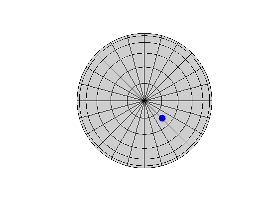

Explains how to define crystal orientations, how to switch between different convention and how to compute crystallographic equivalent orientations.
In texture analysis crystal orientations are used to describe the alignment of the crystals within the specimen. A crystal orientation is defined as the rotation that maps the specimen coordinate system onto the crystal coordinate system.
The class orientation is inherited from the class rotation and allow to work with orientation in MTEX.
In order to define a crystal orientation one has to define crystal and specimen symmetry first.
cs = crystalSymmetry('cubic'); ss = specimenSymmetry('orthorhombic');
Now a crystal orientation is defined in the same way as a rotation. A well known possibility are the so called Euler angles. Here two conventions are commonly used:
The Bunge Euler Angle Convention
Here an arbitrary rotation is determined by three consecutive rotations in the sample reference frame. The first is about the z-axis, the second about the x-axis, and the third again about the z-axis. Hence, one needs three angles to define an orientation by Euler angles. In the literature these angles are known as "triplet of Euler angles" or simply "Euler angles" and you can find many definitions for them according to different authours.
o = orientation('Euler',30*degree,50*degree,10*degree,cs,ss)
o = orientation
size: 1 x 1
crystal symmetry : m-3m
specimen symmetry: mmm
Bunge Euler angles in degree
phi1 Phi phi2 Inv.
30 50 10 0
The Matthies Euler Angle Convention
In contrast to the Bunge convention here the three rotations are taken about the z-axis, the y-axis, and the z-axis.
o = orientation('Euler',30*degree,50*degree,10*degree,'ZYZ',cs,ss)
o = orientation size: 1 x 1 crystal symmetry : m-3m specimen symmetry: mmm Bunge Euler angles in degree phi1 Phi phi2 Inv. 120 50 280 0
The axis angle parametrisation
Another possibility to specify an rotation is the give its rotational axis and its rotational angle.
o = orientation('axis',xvector,'angle',30*degree,cs,ss)
o = orientation
size: 1 x 1
crystal symmetry : m-3m
specimen symmetry: mmm
Bunge Euler angles in degree
phi1 Phi phi2 Inv.
0 30 0 0
Miller indice
There is also a Miller indice convention for defining crystal orientations.
o = orientation('Miller',[1 0 0],[0 1 1],cs,ss)o = orientation size: 1 x 1 crystal symmetry : m-3m specimen symmetry: mmm Bunge Euler angles in degree phi1 Phi phi2 Inv. 135 90 90 0
Four vectors defining a rotation
Given four vectors u1, v1, u2, v2 there is a unique rotations q such that q u1 = v1 and q u2 = v2.
o = orientation('map',xvector,yvector,zvector,zvector,cs,ss)
o = orientation
size: 1 x 1
crystal symmetry : m-3m
specimen symmetry: mmm
Bunge Euler angles in degree
phi1 Phi phi2 Inv.
90 0 0 0
Defining an orientation by a 3 times 3 matrix
o = orientation('matrix',eye(3),cs,ss)
o = orientation
size: 1 x 1
crystal symmetry : m-3m
specimen symmetry: mmm
Bunge Euler angles in degree
phi1 Phi phi2 Inv.
0 0 0 0
Predifined Orientations
In the MTEX there is a list of predefined orientations:
o = orientation('goss',cs,ss)
o = orientation
size: 1 x 1
crystal symmetry : m-3m
specimen symmetry: mmm
Bunge Euler angles in degree
phi1 Phi phi2 Inv.
0 45 0 0
Let
h = Miller(1,0,0,cs)
h = Miller size: 1 x 1 symmetry: m-3m h 1 k 0 l 0
be a certain crystal direction and
o = orientation('Euler',90*degree,90*degree,0*degree,cs,ss)
o = orientation
size: 1 x 1
crystal symmetry : m-3m
specimen symmetry: mmm
Bunge Euler angles in degree
phi1 Phi phi2 Inv.
90 90 0 0
a crystal orientation. Then the alignment of this crystal direction with respect to the specimen coordinate system can be computed via
r = o * h
r = vector3d size: 1 x 1 x y z 0 1 0
Conversely the crystal direction that is mapped onto a certain specimen direction can be computed via the backslash operator
o \ r
ans = Miller size: 1 x 1 symmetry: m-3m h 1 k 0 l 0
Let
o = orientation('Euler',90*degree,0,0,cs); rot = rotation('Euler',0,60*degree,0);
be a crystal orientation and a rotation of the specimen coordinate system. Then the orientation of the crystal with respect to the rotated specimen coordinate system calculates by
o1 = rot * o
o1 = orientation
size: 1 x 1
crystal symmetry : m-3m
specimen symmetry: 1
Bunge Euler angles in degree
phi1 Phi phi2 Inv.
0 60 90 0
Then the class of rotations crystallographically equivalent to o can be computed in two ways. Either by using the command symmetrise
symmetrise(o)
ans = orientation size: 48 x 1 crystal symmetry : m-3m specimen symmetry: 1
or by using multiplication
ss * o * cs
ans = rotation size: 8 x 48
Let cs and ss be crystal and specimen symmetry and o1 and o2 two crystal orientations. Then one can ask for the misorientation between both orientations. This misorientation can be calculated by the function angle.
angle(o,o1) / degree
ans = 30.0000
This misorientation angle is in general smaller then the misorientation without crystal symmetry which can be computed via
angle(rotation(o),rotation(o1)) /degree
ans = 60.0000
Beside the standard linear algebra operations there are also the following functions available in MTEX:
% Then rotational angle and the axis of rotation % can be computed via then commands angle(o1)/degree axis(o1)
ans = 30.0000 ans = Miller size: 1 x 1 symmetry: m-3m h -1 k 0 l 0
To obtain the inverse orientation to o, one can use the command inv(q)
inv(o1)
ans = inverse orientation
size: 1 x 1
specimen symmetry: 1
crystal symmetry : m-3m
Bunge Euler angles in degree
phi1 Phi phi2 Inv.
90 60 180 0
There are methods to transform quaternion in almost any other parameterization of rotations as they are:
[phi1,Phi,phi2] = Euler(o1)
phi1 =
2.2204e-16
Phi =
1.0472
phi2 =
1.5708
The plot function allows you to visualize a quaternion by plotting how the standard basis x,y,z transforms under the rotation.
plot(o1)
Do something fancy here.
| DocHelp 0.1 beta |